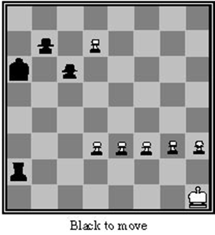

Games are considered idealizations of worlds where there are opponents who try to diminish the welfare of our agent
The presence of an opponent makes decision making more difficult by intoducing uncertainty into those decisions, as is is not possible to know one hundred percent whe he will do
Another type of uncertainty associated with games stems from the fact that, normally, the search space is very large and that there is no time to search for it all
This means that it is not possible to know with complete certainty what are the consequences of the decisions made
Games have a limited and well-defined set of rules
Huge state spaces: usually there is no time to look for the perfect move
They provide a platform to study and test aspects that can then be used in other areas
Acessibility/inaccessibility of the environment
Contingency
Very large state space
Utility influenced by the time factor
Randomness
In our study we will mainly consider games in which there are two players, which we will call max and min
max is the player who represents the agent we are developing
In a classic search problem, max has to find a sequence of steps that lead to a winning state (according to the utility function) and perform the first step of the sequence
But, in a game, the opponent, min, also has a say...
max therefore has to find a strategy that will take him to a winning state regardless of what min does
We will start by looking at an algorithm that allows us to discover the ideal (or optimal) strategy even though we know that there is usually no time to discover that strategy
The minimax is an algorithm that determines the optimal strategy for the max player by deciding what is the next best move to make
Principle: generate the entire game tree and decide which max move is best
Characteristics:
$b$: number of legal moves (branching factor)
$m$: maximum depth of the tree
function MINIMAX-DECISION (state) returns an action
max = -∞
for each action ∈ ACTIONS (state) do
v = MIN-VALUE (RESULT (state, a))
if (v> max) max = v; action = a
return action
function MAX-VALUE (state) returns the minimax value of a state
if TERMINAL-TEST (status) return UTILITY (status)
v = -∞
for each action ∈ ACTIONS (state) do
v = max (v, MIN-VALUE (RESULT (state, a)))
return v
function MIN-VALUE (state) returns the minimax value of a state
if TERMINAL-TEST (status) return UTILITY (status)
v = + ∞
for each action ∈ ACTIONS (state) do
v = min (v, MAX-VALUE (RESULT (state, a)))
return v
Suppose we apply the minimax algorithm to chess with a reasonable evaluation function, and that we are able to examine 1000 positions per second
Our program has around 150 seconds per move, so it can analyze 150000 positions
In chess, the branching factor is around 35, so our program can only examine 3 or 4 moves ahead, which is equivalent to the performance of a beginner
A human with medium abilities can plan 7 or 8 moves ahead!!
Fortunately, it is possible to calculate the same result as the minimax algorithm without having to analyze all the nodes in the tree
The process of removing a branch from the search tree without examining it is called prunning
The alpha-beta algorithm, when applied to a minimax tree, calculates the same result as minimax algorithm, trimming branches of the tree that cannot influence the final decision
Aspects to take into account:
function MAX-VALUE (state, α, β) returns a utility value
if TERMINAL-TEST (status) return UTILITY (status)
for each action ∈ ACTIONS (state) does
α = max (α, MIN-VALUE (RESULT (state, a), α, β))
if α ≥ β then return α
return α
function MIN-VALUE (state, α, β) returns a utility value
if TERMINAL-TEST (status) return UTILITY (status)
for each action ∈ ACTIONS (state) does
β = min (β, MAX-VALUE (RESULT (state, a), α, β))
if α ≥ β then return β
return β
function ALPHABETA-DECISION (state) returns an action
max = -∞
for each action ∈ ACTIONS (state) does
v = MIN-VALUE (RESULT (state, a), -∞, +∞)
if (v> max) max = v; action = a
return action
This algorithm is very dependent on the order in which successors are examined
Temporal complexity $O(b^{\frac{d}{2}})$ if the tree is in ordered in order to facilitate the use of the algorithm
Based on this principle, alpha-beta is capable of examining twice as many moves as minimax
If not, the time complexity will be $O(b^{\frac{3d}{4}})$
An evaluation function is a heuristic that gives us an estimate of the expected value of a given state of the game
The performance of a program is strongly dependent on the quality of the evaluation function
If the function is not correct, it can take the program into seemingly good situations, which in reality can be disastrous
Criteria for choosing evaluation functions:
There are many programs that use linear functions wighted with the form
$$w_1 f_1 + w_2 f_2 + \cdots w_n f_n $$as evaluation functions, where the $f$’s represent characteristics of a given position in the game and the $w$’s are the weights of each of those characteristics
In chess, two bishops can have more than twice the potential of a bishop; a bishop has more potential when there are few pieces on the board; etc.
Non-linear functions allow you to take these aspects into account
Set a search limit determined by the time available
An alternative is to use the method of searching for iterative deepening until time runs out (ex: Deep Blue)
Horizon problem: sometimes trying to postpone solving a problem in the hope that it will disappear
It consists of not analyzing some successors of a state
One possible approach is to use beam search
Problem: we may be ruling out the best move
Games that include an element of luck (eg, dice roll)
In addition to max and min levels, the search tree must include luck levels
Ex: card games, in which opponents' initial cards are unknown
We can usually calculate the probability of each card distribution
It looks like we have a random play early in the game
Idea: calculate the minimax value of each share for each distribution and choose the stock with the maximum expected value over all distributions
In “AI games techniques: are they useful for anything other than games?”, Dana S. Nau, A synopsis of the panel discussion at IAAI-98
The early search on the alpha-beta search algorithm was useful for establishing a foundation for AI theories of heuristic search, and these theories have been useful in many areas of AI
In his work on CHINNOOK, Schaeffer had to develop new parallel algorithms for information storage and retrieval. Those algorithms are now finding use in DNA sequencing and other areas
Tesauro used backgammon as a test bed for the development of learning algorithms that have inspired work by other researchers on several other problems
Examples include:
To adapt hierarchical task-network planning, techniques for use in BRIDGE GAME, ways for the planner to perform complex numerical calculations, plan for multiple agents, consult external information sources and reason about uncertain information were developed. These same techniques are now proving useful in generating and evaluating manufacturing process plans